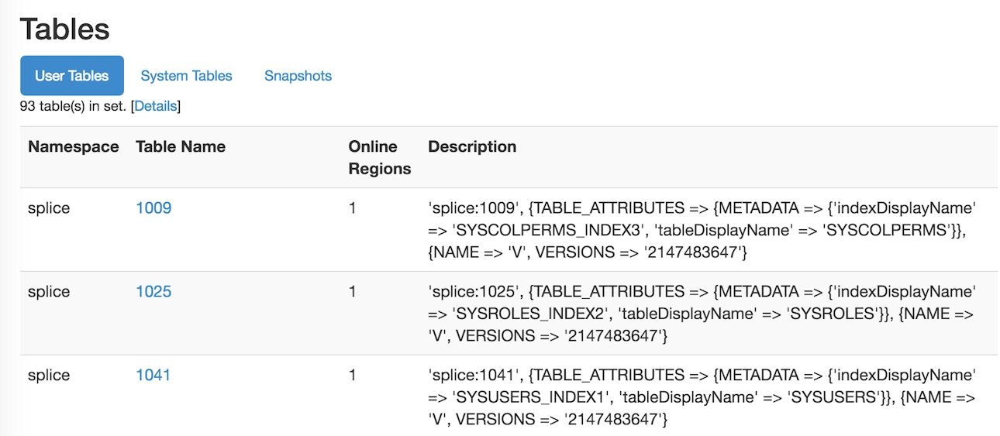

Working with HBase
This topic presents information about working in HBase with Splice Machine, in these sections:
- The Mapping Splice Machine Tables to HBase section shows you how to view your Splice Machine tables and how map the table names that we see in HBase to the more descriptive table names that we see in Splice Machine.
- The Accessing HBase Master section shows you how to access HBase Master so that you can peek under the surface a bit.
Mapping Splice Machine Tables to HBase
If you are looking at tables in the Splice Machine database that do not appear to match what you see in the HBase Master Web user interface, they may not match up. To view your Splice Machine tables in HBase, follow these steps:
-
Use the Splice interactive command interface to view the tables:
You can use the show tables command to view the tables in your Splice Machine database:
TABLE_SCHEM |TABLE_NAME |CONGLOM_ID|REMARKS ------------------------------------------------------------- SYS |SYSALIASES |368 | SYS |SYSBACKUP |944 | SYS |SYSBACKUPFILESET |976 | SYS |SYSBACKUPITEMS |1056 | SYS |SYSBACKUPJOBS |1184 | SYS |SYSCHECKS |384 | SYS |SYSCOLPERMS |640 | SYS |SYSCOLUMNS |80 | SYS |SYSCOLUMNSTATS |1216 | SYS |SYSCONGLOMERATES |48 | SYS |SYSCONSTRAINTS |336 | SYS |SYSDEPENDS |272 | SYS |SYSFILES |288 | SYS |SYSFOREIGNKEYS |240 | SYS |SYSKEYS |320 | SYS |SYSPERMS |816 | SYS |SYSPHYSICALSTATS |1264 | SYS |SYSPRIMARYKEYS |1424 | SYS |SYSROLES |752 | SYS |SYSROUTINEPERMS |672 | SYS |SYSSCHEMAS |32 | SYS |SYSSEQUENCES |800 | SYS |SYSSTATEMENTS |256 | SYS |SYSTABLEPERMS |656 | SYS |SYSTABLES |64 | SYS |SYSTABLESTATS |1280 | SYS |SYSTRIGGERS |304 | SYS |SYSUSERS |880 | SYS |SYSVIEWS |352 | SYSIBM |SYSDUMMY1 |1296 |
-
View the tables in the HBase Master Web Console:
To view the HBase tables, use the HBase Master Web Console, at http://localhost:60010/.
Note that all of the user tables in the Tables section have numeric names; the numbers match the conglomerate number (CONGLOM_ID) values displayed by the show tables command.
These numbers are used in HBase as directory names; you can find those directories in your file system and examine the tables directly.
Accessing HBase Master
If you are an HBase veteran or someone interested in seeing a little of what goes on under the surface, you can access HBase Master with the default HBase URL:
http://localhost:60010
Because Splice Machine encodes and compresses the data for space efficiency, the actual data in your tables is virtually unreadable.